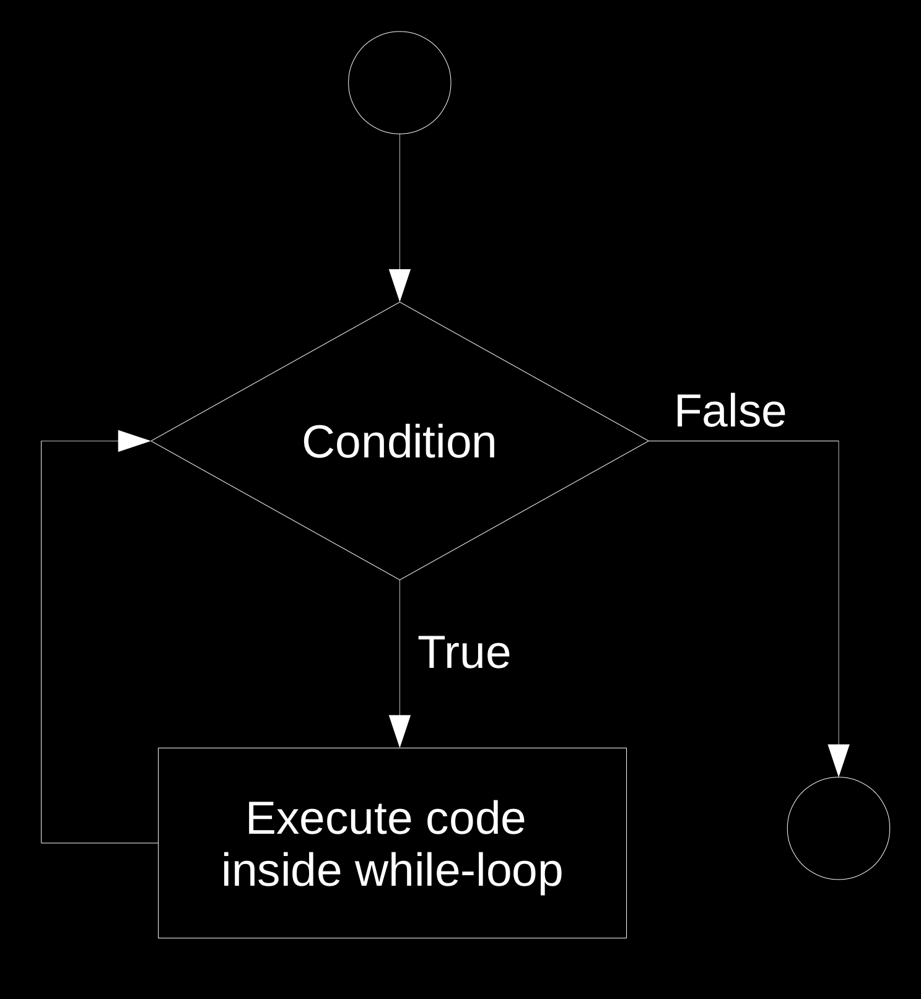

A Brief Introduction to Programming with R
2022-01-21
Preface

This textbook introduces students to the fundamental practices of Data Science in the context of economic research. The course covers basic theoretical concepts and practical skills in gathering, preparing/cleaning, visualizing, storing, and analyzing digital data for research purposes.

Creative Commons License
The online version of this book is licensed under the Creative Commons Attribution-NonCommercial-ShareAlike 4.0 International License.
Ulrich Matter St. Gallen, Switzerland